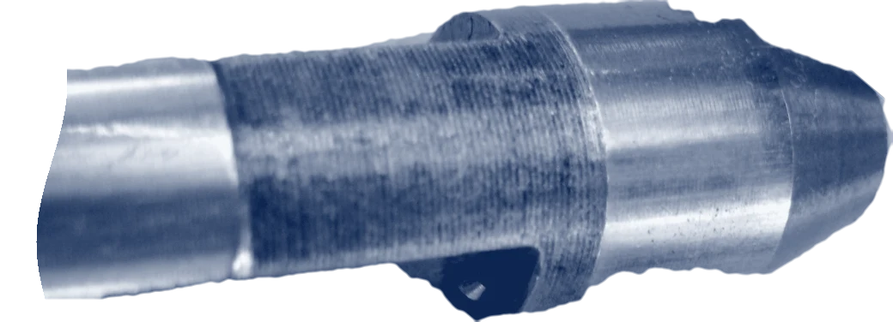
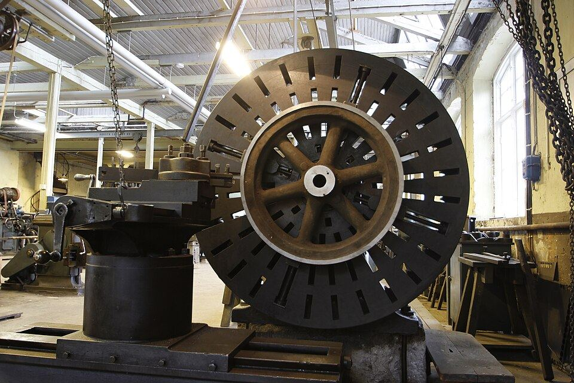

| 図名 | 機械オペレーター 2名募集 | ||
|---|---|---|---|
| 工場見学 | 毎週 水 16:00／土 10:00 申し込む →私服で大丈夫です | ||
| 社名 | 河内精機 | 所在 | 東大阪 |
| 注記 | 部品の写真：Dirk Gräfe／Wikimedia Commons／CC BY-SA 3.0。よその部品を切り抜いて、青焼きの色に変えた | ||
仕事の中身
機械に材料をつかませ、刃物を付け、最初の1個を測る。合っていれば量産し、2時間ごとに抜き取って測る。仕事の半分は「測る」です。

河内精機の旋盤はこれより小さく、手のひらに乗る部品が多いです。
写真：Work With Sounds／Wikimedia Commons／CC BY-SA 4.0
削っているのは、油圧バルブ、半導体の製造装置、医療用ポンプに入る部品です。1個だけの試作から、2,000個の量産まで。
記録票は、実際に書いているのと同じ形です。測った値を手で書き、班長が確認の判を押します。
1日の流れ（辻本さんの作業日報から）
NC旋盤の担当、入社3年目。スプールを1日に約160本。
作業日報
日付2026年10月21日（水）
氏名辻本 航大
機械NC旋盤 3号機
| 時刻 | 作業 | メモ（本人が手で書く欄） |
|---|---|---|
| 8:15 | 朝礼・危険予知 | 切りくずの巻きつきに注意。3号機のチャック、締め直し確認 |
| 8:30 | 段取り | 爪を替えて刃物2本。プログラム O2031 呼び出し。55分 |
| 9:25 | 初品の測定 | 外径 11.981。森下さんOK |
| 9:40 | 量産 | 削っている間にバリ取り。1本 2分40秒 |
| 12:00 | 昼休み 60分 | 仕出し弁当 230円 |
| 13:00 | 量産・抜き取り | 15時 外径 11.984 → 太ってきた。補正 −0.003 |
| 16:30 | 刃物の点検・日報 | 仕上げの刃先、明日の朝までは使える。替えるのは明日 |
| 17:10 | 終業 | 今日 162本、不良 0 |
今月の残業 7 時間月末に納期が重なる週だけ、1日1時間ほど残る
一緒に働く人
製造の29人のうち、20代は9人。工業高校から来た人も、まったく別の仕事から来た人もいます。
給料・休み・残業
聞かれることが多い順に並べました。数字は2025年度（2025年4月〜2026年3月）の実績です。
| 給料 |
|
|---|---|
| 残業 | 月 平均11.4時間多い月は2月の19.8時間、少ない月は8月の4.1時間。夜勤はありません。 |
| 休み | 年間 117日土日祝（会社カレンダーで土曜出勤が年6回）、夏5日、年末年始6日。有給は入社6か月後から10日、2025年度の取得は平均11.2日。 |
| 時間 | 8:15〜17:10（昼60分、午前と午後に10分ずつ休憩） |
| 賞与・昇給 | 賞与 年2回（2025年度は合わせて基本給の3.1か月分）。昇給 年1回（2025年度の平均 +6,300円） |
| 手当 | 通勤（月31,600円まで）、技能検定（2級 月5,000円・1級 月10,000円、受験料は会社が払う。いま14人が合格）、家族、皆勤、残業 |
| 続いているか | 9人中 8人2021年以降に入った人のうち、いまも働いている人。辞めた1人は実家の農業を継ぐため。 |
| 応募できる人 | 35歳未満（長く勤めて技能を身につけてもらうため。雇用対策法施行規則の例外 3号イ）。学歴・経験・免許は問いません |
| そのほか | 社会保険、退職金（勤続3年から）、作業着の貸与と洗濯、安全靴を年2足、工場全体に空調（2024年から。夏の室温 平均31.2℃→27.4℃）、試用期間3か月（条件は同じ） |
進路指導の先生へ
高校生の応募は学校を通して受け付けます。求人票はハローワーク布施に出しています（求人番号 27100-38411061）。7月から10月までは、平日16時からの見学をいつでも受けています。先生だけの下見も歓迎します。
会社のこと
1965年に布施の長屋で、旋盤2台・3人で始めた会社です。いまは2代目の河内 雅之が社長です。
会社概要
| 会社名 | 株式会社 河内精機 |
|---|---|
| 創業 | 1965年（法人にしたのは1971年） |
| 従業員 | 38名（製造29・品質保証4・事務と営業5）／平均年齢41.6歳 |
| 資本金・売上 | 1,000万円・6億8,400万円（2025年度） |
| 設備 | NC旋盤14台、主軸移動形自動旋盤4台、マシニングセンタ9台（うち5軸2台）、三次元測定機2台 |
| 取引先 | 63社（油圧機器、半導体製造装置、医療機器、食品機械）。いちばん大きい1社で売上の22% |
| 認証 | ISO 9001（2011年から） |
| 所在地 | 大阪府東大阪市高井田西4丁目。Osaka Metro 中央線「高井田」駅から歩いて9分。車・バイク・自転車の通勤も可（駐輪場あり、駐車場は月3,000円） |
沿革
- 1965先代の河内 正一が布施で創業。最初の仕事は自転車のハブの軸
- 1974油圧機器メーカーと取引開始。いまもいちばん長い取引先
- 1982高井田のいまの場所へ。床は振動に強い厚さ30cmのコンクリート
- 1997初めてのNC旋盤を2台。プログラムは当時30歳の森下が独学で覚えた
- 2011ISO 9001。測定の記録をどの機械の何本目かまで追えるように
- 20195軸マシニングセンタを入れ、半導体装置の部品を始める
- 2024工場全体に空調